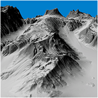
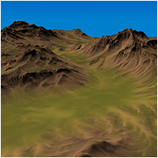
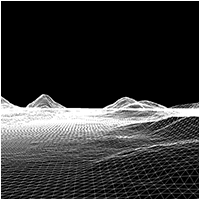

Tutorials

OpenGL 4.0 on Linux Tutorials |
 |
OpenGL 4.0 Terrain on Linux Tutorials |
 |
DirectX 11 on Windows 10 Tutorials |
 |
DirectX 11 Terrain Tutorials - Series 2 |
 |
DirectX 11 Terrain Tutorials |
OpenGL 4.0 on Windows Tutorials |